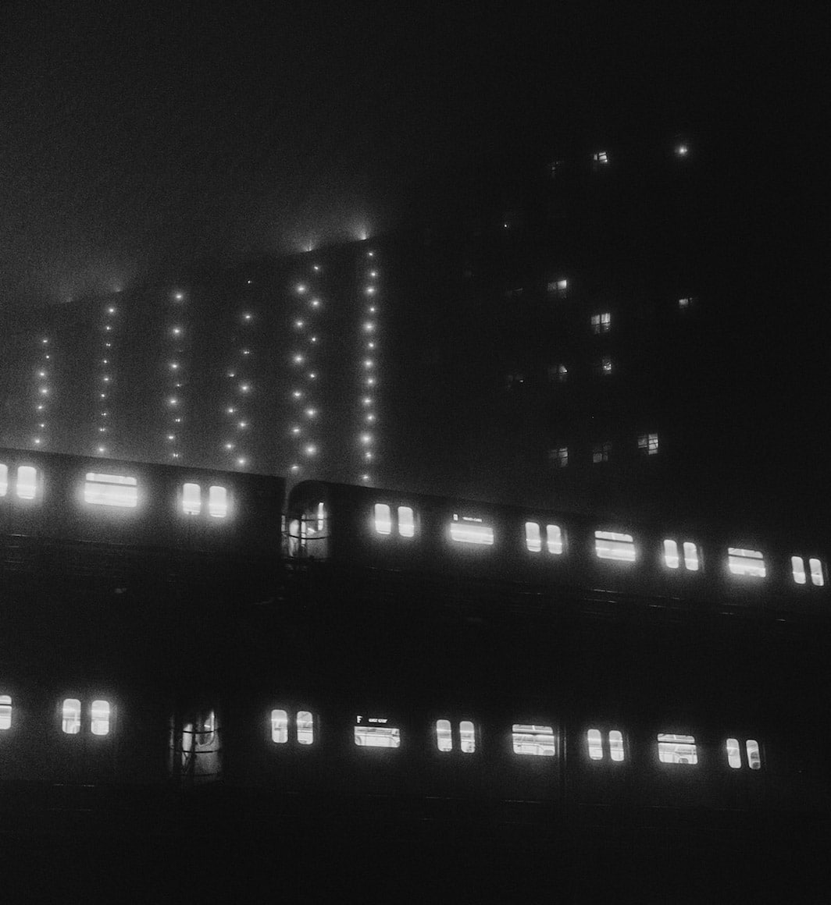

Interview with Luc Kordas
Interview And Photography Special By Emma Taggart
Commuters of New York City Subway

Metro system is almost like a city within a city, like a mini New York, condensed underground